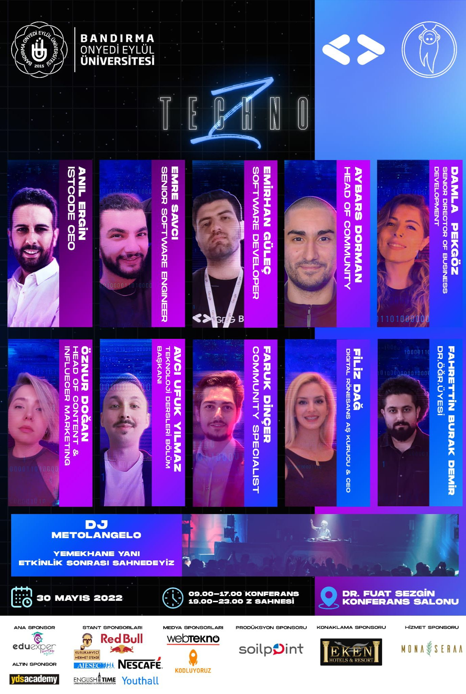

TECHNO-Z
Teknoloji, yazılım, kariyer alanında ün yapmış kişilerin,
şirketlerin, start-upların, insan kaynakları gibi
departmanlardan konuşmacıların sahne aldığı
Techno Z 31 MAYIS 2022 tarihinde ilk kez yüzyüze gerçekleşti.
Etkinliğin ardından okul bahçesinde düzenlenen djli parti ile Bandırma'nın en büyük kariyer etkinliğini yaptık.
Etkinliğin ardından okul bahçesinde düzenlenen djli parti ile Bandırma'nın en büyük kariyer etkinliğini yaptık.